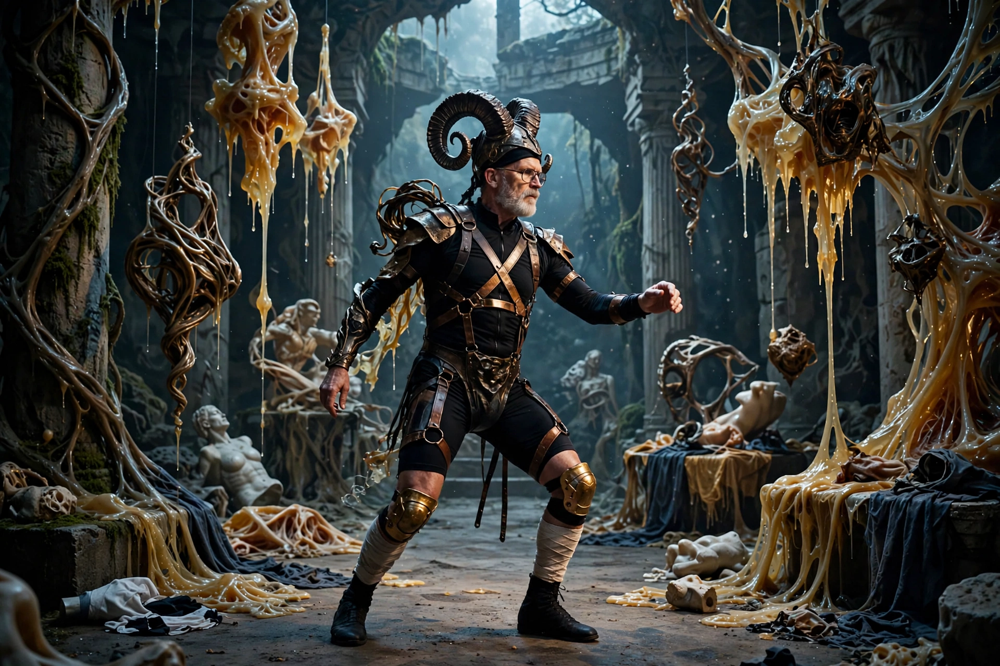

Matthew Barney (born March 25, 1967) is an American contemporary artist and film director who works in sculpture, photography, drawing, and film, best known for the Cremaster Cycle (1994–2002).

| Matthew Barney | |
|---|---|
| Born | March 25, 1967, San Francisco, California |
| Education | Yale University |
| Known for | Cremaster Cycle, Drawing Restraint |
A former high-school football player, Barney explored athletic resistance and the body in the Drawing Restraint series, drawing while climbing or restrained. His materials include petroleum jelly, plastics, and prosthetics.
The five-film Cremaster Cycle is a symbolic system centred on the cremaster muscle. Later works include River of Fundament (2014) and Redoubt (2019). He won the Hugo Boss Prize in 1996.